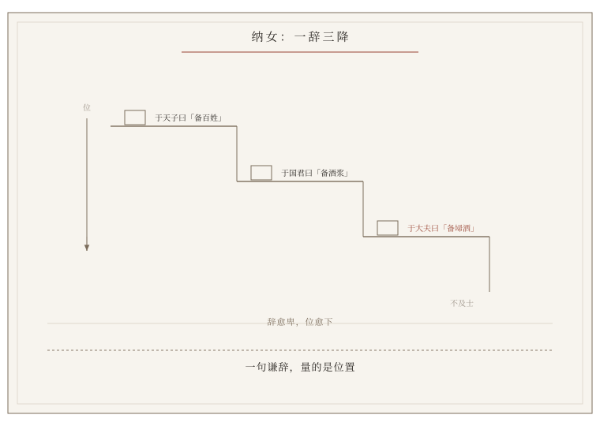

曲礼下 · 二·八十 · 第 203 课
纳女，于天子曰「备百姓」，于国君曰「备酒浆」，于大夫曰「备埽洒」。注「纳女，犹致女也。婿不亲迎，则女之家遣人致之，此其辞也」「姓之言生也」。
说什么事：嫁女而不亲迎，女家遣人致辞，一句辞分出三等。
落在哪一层：礼，兼及礼辞。论一句谦辞里藏着的分寸。
为何编在此位：曲礼下以此节收篇。自天子至大夫，一辞三降，篇终于「备埽洒」——礼之末，是最卑的一句客气话。
【经】納女，於天子曰「備百姓」，於國君曰「備酒漿」，於大夫曰「備埽灑」。
【注】納女，猶致女也。婿不親迎，則女之家遣人致之，此其辭也。姓之言生也。天子，皇后以下百二十人，廣子姓也。酒漿、埽灑，婦人之職。
【疏】纳犹致也。致者，婿不亲迎，则女之家三月庙见，使人致之而为此辞。姓，生也，言致此女备王之后妃以下百二十人，以生广子孙，故云姓也。「于国君曰备酒浆」者，致女于诸侯也，酒浆是妇人之职也，故送女而持此为辞；转卑，不敢言「百姓」也，《诗》云「无非无仪，唯酒食是议」是也。「于大夫曰备埽洒」，弥贱也，不敢同诸侯，故不得言「酒浆」也；唯及大夫不及士者，士卑故也。诸侯功成，得备八妾，重国广嗣也。成九年夏「季孙行父如宋致女」，此云纳女，故云「纳女犹致女」也；知婿不亲迎嫁女之家使人致女者，以成九年二月「伯姬归于宋」，时宋公不亲迎，故鲁季孙行父如宋致女是也。而天子亦有亲迎以否者，《异义》云「《礼》戴说天子亲迎，《左氏》说天子不亲迎，使上卿迎之，诸侯亦不亲迎，使上大夫迎」；郑《驳异义》云「文王迎大姒，亲迎于渭」，又引孔子答哀公「合二姓之好，以继先圣之后，以为天地宗庙社稷之主，冕而亲迎，君何谓已重乎」，此天子诸侯有亲迎也；若不亲迎，则宜致女，云「备百姓」也。
纳 疏「纳犹致也」。不是娶，是「送达」；女家遣人致之于夫家。
致女 婿不亲迎时，女家使人送女并入致辞。
姓 注「姓之言生也」。此处不作「百姓之姓」解，谓广子姓、广子孙。
备 充数、充位。非「具备」，是「聊充其数」的自谦之辞。
酒浆 酒与浆饮，妇人供饮食之职。
埽洒 洒扫。注「酒浆、埽洒，妇人之职」。
嫁女而不亲迎，女家遣人致辞：对天子说「聊充后宫子姓之数」，对国君说「聊供酒浆之役」，对大夫说「聊供洒扫之役」。
此节只一句辞，而分三等。同一件「把女儿送来」的事，对天子说「备百姓」——所备者是子姓之广；对国君说「备酒浆」——所备者是一饮食之职；对大夫说「备埽洒」——所备者是扫地。辞越往下越卑，不是女方自轻，是位分使之然。疏两言「转卑」「弥贱」，都紧接一句「不敢」：不敢言百姓，不敢言酒浆。礼辞的分寸，全在这「不敢」二字上。篇终于此，收得极轻，也极准。
第一层 纳即是致 注「纳女，犹致女也」。此礼不在「娶」而在「致」：婿既不亲迎，女家便遣人送女并致一句辞。礼有不行，则以辞补之——补的不是仪式，是那一层「我来过了」的交代。可与上节「挚之言至」对看：一以物表至，一以辞表至。
第二层 一辞三降 备百姓、备酒浆、备埽洒，所备之物由「广子孙」降到「洒扫」。所备愈具体、愈琐细，位置愈低。这是古人的一条表达规律：把自己的用处说得越小，越合于下位。
第三层 辞卑而分严 疏「转卑，不敢言百姓」「弥贱，不敢同诸侯」。不敢，不是不愿，是不能。辞之卑，正是分之严：正因为等级在此，才必须用低一格的辞。若对大夫而言「备百姓」，非敬，是乱。
第四层 亲迎与致女之辨 《异义》两说相争：戴说天子亲迎，左氏说天子不亲迎而使上卿迎。郑驳之，引文王亲迎于渭、孔子答哀公「冕而亲迎」，断天子诸侯有亲迎；若不亲迎，则宜致女。可见「致女」是备礼之阙，不是常礼。疏又举成九年伯姬归宋、宋公不亲迎、季孙行父如宋致女为实例——经有实案，非空说。
与今日何干 交付一件事时怎么措辞，等于给自己定位。说「我来了」，还是说「我来帮这点小忙」，听的人立刻知道你怎么看自己。谦辞不是套话，是把位置说准。
| 左 | 右 |
|---|---|
| 纳女 | 犹致女，非娶 |
| 婿不亲迎 | 女家遣人致之，此其辞 |
| 于天子曰备百姓 | 姓之言生，广子姓 |
| 于国君曰备酒浆 | 转卑，不敢言百姓 |
| 于大夫曰备埽洒 | 弥贱，不敢言酒浆 |
| 不及士 | 士卑故也 |
| 郑驳《异义》 | 天子诸侯有亲迎，不亲迎则致女 |
画一座宅门的门内，门槛内侧站着一位行礼的女使（侧身、低首、双手在身前相叠，衣饰素净），门槛外侧空着，示「婿不亲迎、女家遣人致之」。门内左侧有一几，几上置一只酒壶与一只水浆罐；右侧墙根立一柄短帚与一只洒水小器。三样东西自左而右排列，暗示「酒浆」与「埽洒」两等之辞。地面干净，帚下有一小堆极淡的尘痕。不写文字、不画第二人。赭色只用在女使的腰带与帚柄上。
